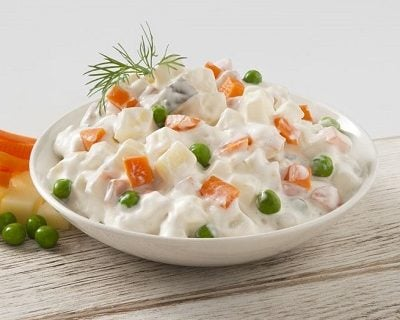

RUS SALATASI TARİFİ

MALZEMELER
- 3 tane orta boy patates
- 2 tane havuç
- 1 su bardağı bezelye
- Kornişon turşu
- 5 yemek kaşığı mayonez
- 5 yemek kaşığı yoğurt
- 1 tatlı kaşığı tuz
- yarım çay kaşığı karabiber
HAZIRLANIŞI
- İlk olarak sebzeleri kabuklarını soyarak küp küp doğrayalım.
- Haşlanan sebzeleri suyunu süzüp soğumaya bırakalım
- Soğuyan sebzeleri bir kaseye alalım ve üzerine doğranmış kornişonları ilave edelim.
- Ayrı bir kasede yoğurt, mayonez, tuz ve karabiberi karıştıralım.
- Bu karışımı sebzelerin üzerine döküp güzelce karıştıralım.
- AFİYET OLSUN...